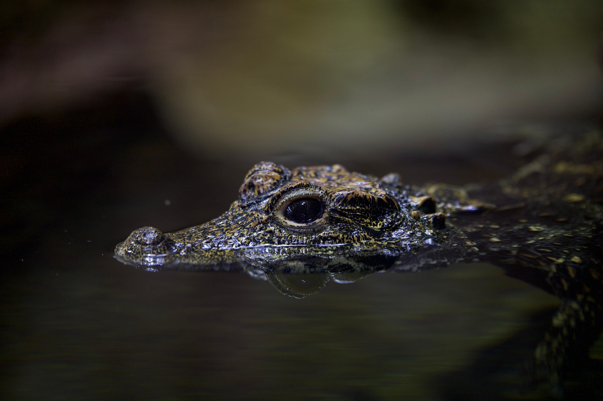

(Crocodylus moreletii)
El cocodrilo es un reptil semiacuático conocido por su fuerza, adaptaciones para la caza y longevidad. Históricamente ha sido temido por los humanos y ocupa un papel importante en los ecosistemas, controlando poblaciones de peces y otros animales. Gracias a su inteligencia y capacidad de adaptación, los cocodrilos pueden acechar presas, nadar con gran velocidad y establecer territorios definidos. Dependiendo de la especie, su esperanza de vida puede superar los 70 años, necesitando hábitats acuáticos limpios y suficientes recursos para alimentarse. Los cocodrilos presentan características físicas únicas, como su mandíbula poderosa, escamas resistentes y cola fuerte, y viven tanto en ríos como en zonas costeras, siendo depredadores eficientes en su ecosistema.
Características